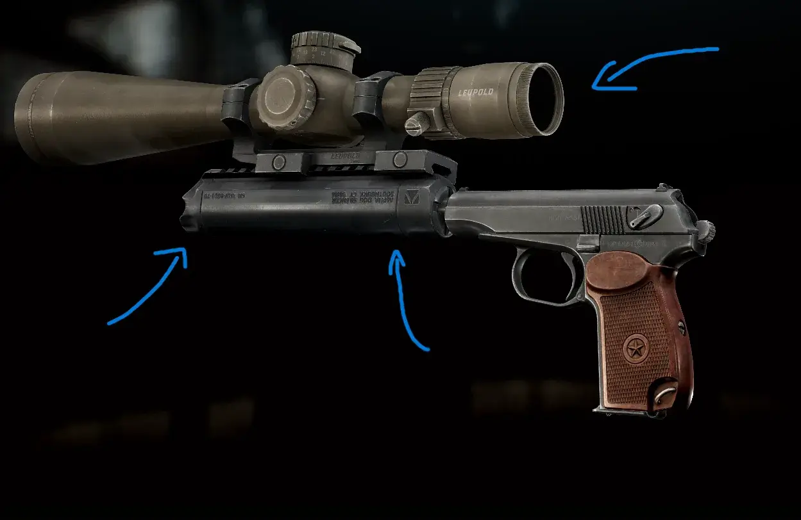
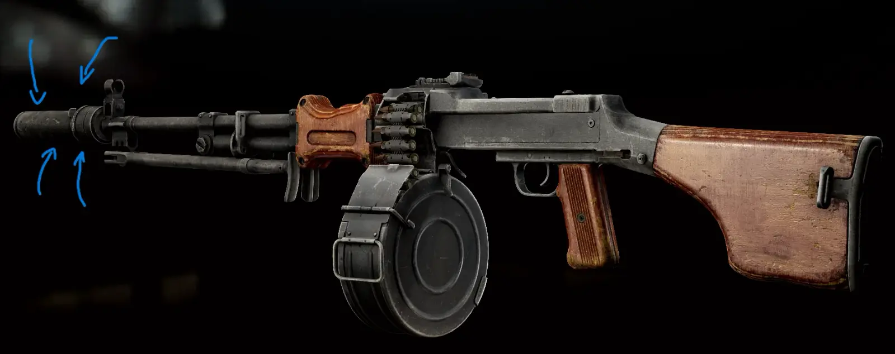
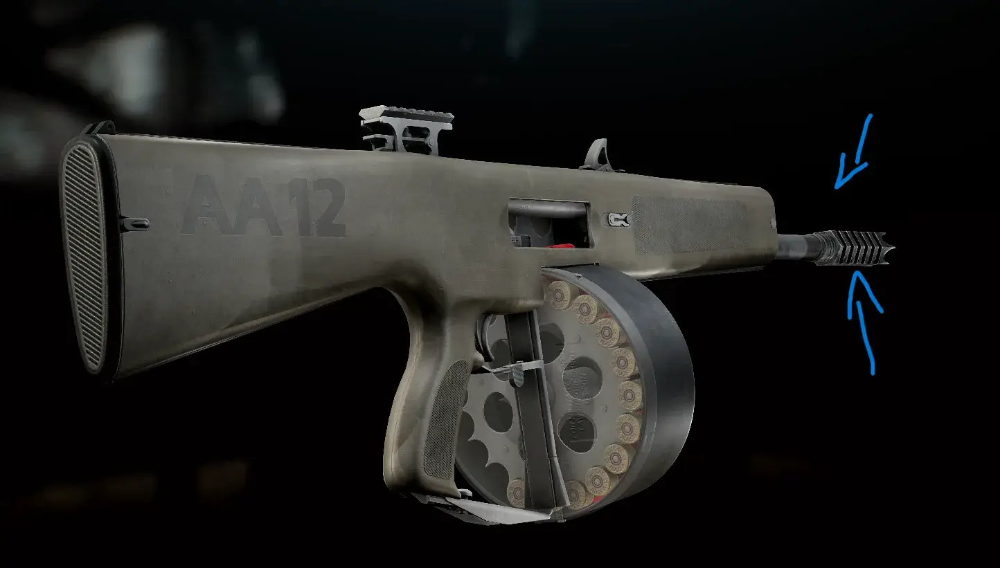
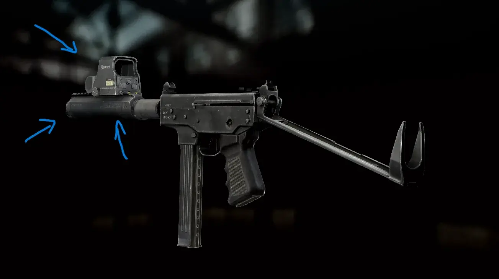
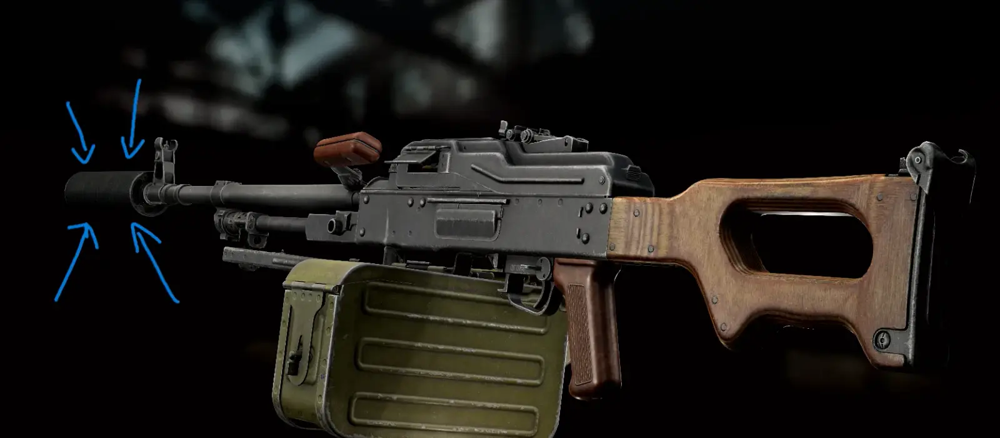

Mod
Make Tarkov Great Again!
- Downloads
- 2,485
- Favourites
- 7
- Mod lists
- 9
This mod displayed a profile-binding notice on Forge.
The author marked this item as containing advertising.
Mods on Hiatus / Support Paused
- Status: No updates planned due to focus on other projects.
- Open Invitation: The community has full permission to update, modify, and redistribute these mods. Feel free to fork the repository and build your own version.
Changes
Just some changes I made for my own playthrough and decided to share as a mod.
Kriss Vector 9x19mm
- Increased fire rate (1100 RPM)
Revolvers
- Removed double action accuracy penalty:
- RSH-12
- Chiappa Rhino 9mm
- Chiappa Rhino .357
- MTs-255
Attachments & Compatibility
- AA-12 Barrels: Added compatibility with more muzzle devices.
- RPD Barrels: Added compatibility with more muzzle devices.
- PKM Barrel: Added compatibility with more muzzle devices.
- KEDR Threaded Adapter: Added compatibility with more muzzle devices.
- Alpha Dog Suppressor: Added compatibility with various sights.
Installation

- Download the
Make-Tarkov-Great-Again.zip. - Drag and drop the files directly into the root folder of your SPT installation..
- The folders should merge automatically. If you get a prompt to overwrite files, say yes.
Gallery





Suggestions
Have an idea?
If you have suggestions for:
- New weapon rebalances.
- Attachment compatibility tweaks.
- QoL improvements.
Feel free to leave a comment or reach out.
Recommended Mods
Issues
- The AA-12 silenced sound is weird.

Version
1.0.0
SPT ~4.0.0
Fika: unknown
2,485 downloads9.2 KB
Initial Release
VirusTotal: report 1